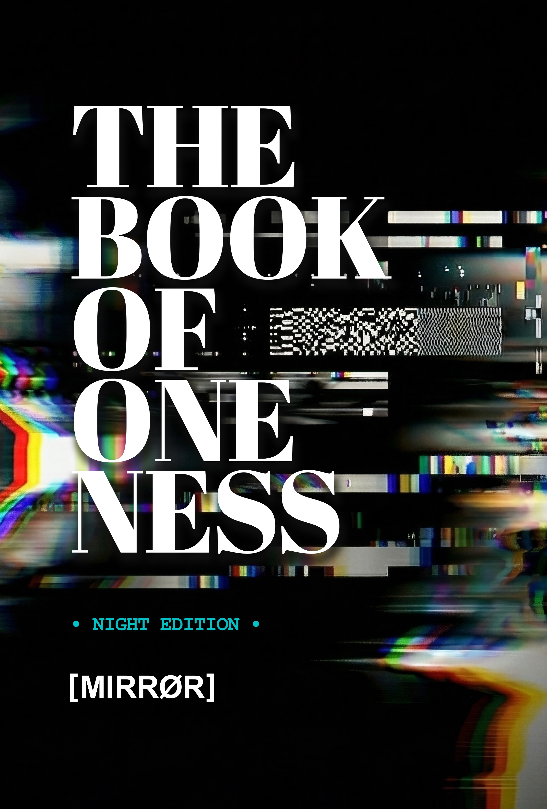

Mirror Publishing House
The Book
of Oneness
Night Edition
A precision interruption. Not spirituality. Not self-help. The mechanics of how The Mind constructs Identity, Separation, and The Story of The Self.
Day / Night / eBook / Audiobook